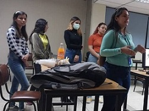
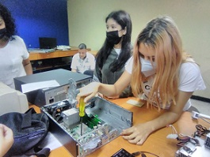
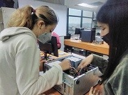

Somos Verónica Villamizar, Raymari Romero, Leslimar Rivero, Angie Bayona y Janin Aboutraba, un grupo de estudiantes de Ingeniería informática de la Universidad Politécnica Territorial de Lara "Andrés Eloy Blanco". Realizamos nuestro proyecto en el Departamento de Informática de la Gobernación del Estado Lara, durante nuestro tiempo en la Gobernación realizamos jornadas de mantenimiento a los equipos de computación y dimos charlas sobre el mantenimiento y las herramientas ofimáticas.
En nuestra página web se encuentra toda clase de información sobre el mantenimiento, las herramientas ofimáticas y un tema muy importante como lo es, la forma correcta de sentarnos frente al computador.
Toda la información se encuentra en el Menú de nuestra página web, en la parte de "Contenido". También la puedes conseguir Aquí
Nuestra misión es transmitir el conocimiento que adquirimos a travás de nuestras clases y nuestra estancia en la Gobernación. Al transmitir nuestro aprendizaje estamos ayudando que más personas tenga un mayor conocimiento sobre los temas ya mencionados que son importantes en nuestra carrera.
